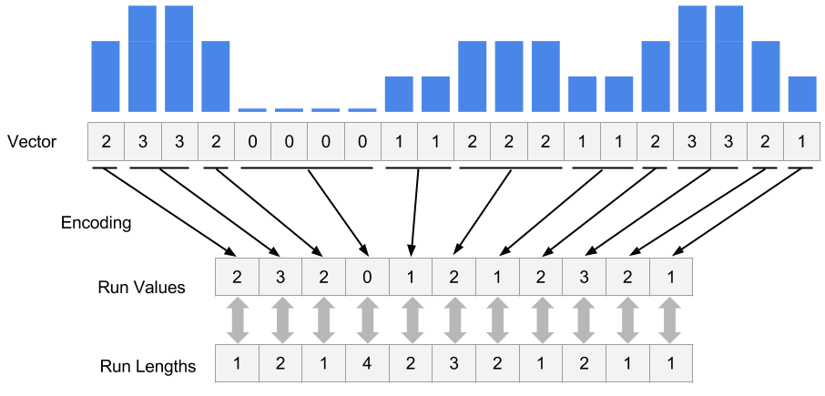

Chapter 5 Genomic Intervals and R
A considerable time in computational genomics is spent on overlapping different features of the genome. Each feature can be represented with a genomic interval within the chromosomal coordinate system. In addition, each interval can carry different sorts of information. An interval may for instance represent exon coordinates or a transcription factor binding site. On the other hand, you can have base-pair resolution, continuous scores over the genome such as read coverage or scores that could be associated with only certain bases such as in the case of CpG methylation (See Figure 1). Typically, you will need to overlap intervals on interest with other features of the genome, again represented as intervals. For example, you may want to overlap transcription factor binding sites with CpG islands or promoters to quantify what percentage of binding sites overlap with your regions of interest. Overlapping mapped reads from high-throughput sequencing experiments with genomic features such as exons, promoters, enhancers can also be classified as operations on genomic intervals. You can think of a million other ways that involves overlapping two sets of different features on the genome. This chapter aims to show how to do analysis involving operations on genomic intervals.

Figure 1: Summary of genomic intervals with different kinds of information
5.1 Operations on Genomic Intervals with GenomicRanges package
The Bioconductor project has a dedicated package called GenomicRanges to deal with genomic intervals. In this section, we will provide use cases involving operations on genomic intervals. The main reason we will stick to this package is that it provides tools to do overlap operations. However package requires that users operate on specific data types that are conceptually similar to a tabular data structure implemented in a way that makes overlapping and related operations easier. The main object we will be using is called GRanges object and we will also see some other related objects from the GenomicRanges package.
5.1.1 How to create and manipulate a GRanges object
GRanges (from GenomicRanges package) is the main object that holds the genomic intervals and extra information about those intervals. Here we will show how to create one. Conceptually, it is similar to a data frame and some operations such as using notation to subset the table will work also on GRanges, but keep in mind that not everything that works for data frames will work on GRanges objects.
library(GenomicRanges)
gr=GRanges(seqnames=c("chr1","chr2","chr2"),
ranges=IRanges(start=c(50,150,200),end=c(100,200,300)),
strand=c("+","-","-")
)
gr## GRanges object with 3 ranges and 0 metadata columns:
## seqnames ranges strand
## <Rle> <IRanges> <Rle>
## [1] chr1 [ 50, 100] +
## [2] chr2 [150, 200] -
## [3] chr2 [200, 300] -
## -------
## seqinfo: 2 sequences from an unspecified genome; no seqlengths# subset like a data frame
gr[1:2,]## GRanges object with 2 ranges and 0 metadata columns:
## seqnames ranges strand
## <Rle> <IRanges> <Rle>
## [1] chr1 [ 50, 100] +
## [2] chr2 [150, 200] -
## -------
## seqinfo: 2 sequences from an unspecified genome; no seqlengthsAs you can see it looks a bit like a data frame. Also, note that the peculiar second argument “ranges” which basically contains start and end positions of the genomic intervals. However, you can not just give start and end positions you actually have to provide another object of IRanges. Do not let this confuse you, GRanges actually depends on another object that is very similar to itself called IRanges and you have to provide the “ranges” argument as an IRanges object. In its simplest for, an IRanges object can be constructed by providing start and end positions to IRanges() function. Think of it as something you just have to provide in order to construct the GRanges object.
GRanges can also contain other information about the genomic interval such as scores, names, etc. You can provide extra information at the time of the construction or you can add it later. Here is how you can do those:
gr=GRanges(seqnames=c("chr1","chr2","chr2"),
ranges=IRanges(start=c(50,150,200),end=c(100,200,300)),
names=c("id1","id3","id2"),
scores=c(100,90,50)
)
# or add it later (replaces the existing meta data)
mcols(gr)=DataFrame(name2=c("pax6","meis1","zic4"),
score2=c(1,2,3))
gr=GRanges(seqnames=c("chr1","chr2","chr2"),
ranges=IRanges(start=c(50,150,200),end=c(100,200,300)),
names=c("id1","id3","id2"),
scores=c(100,90,50)
)
# or appends to existing meta data
mcols(gr)=cbind(mcols(gr),
DataFrame(name2=c("pax6","meis1","zic4")) )
gr## GRanges object with 3 ranges and 3 metadata columns:
## seqnames ranges strand | names scores name2
## <Rle> <IRanges> <Rle> | <character> <numeric> <character>
## [1] chr1 [ 50, 100] * | id1 100 pax6
## [2] chr2 [150, 200] * | id3 90 meis1
## [3] chr2 [200, 300] * | id2 50 zic4
## -------
## seqinfo: 2 sequences from an unspecified genome; no seqlengths# elementMetadata() and values() do the same things
elementMetadata(gr)## DataFrame with 3 rows and 3 columns
## names scores name2
## <character> <numeric> <character>
## 1 id1 100 pax6
## 2 id3 90 meis1
## 3 id2 50 zic4values(gr)## DataFrame with 3 rows and 3 columns
## names scores name2
## <character> <numeric> <character>
## 1 id1 100 pax6
## 2 id3 90 meis1
## 3 id2 50 zic4# you may also add metadata using the $ operator, as for data frames
gr$name3 = c("A","C", "B")
gr## GRanges object with 3 ranges and 4 metadata columns:
## seqnames ranges strand | names scores name2
## <Rle> <IRanges> <Rle> | <character> <numeric> <character>
## [1] chr1 [ 50, 100] * | id1 100 pax6
## [2] chr2 [150, 200] * | id3 90 meis1
## [3] chr2 [200, 300] * | id2 50 zic4
## name3
## <character>
## [1] A
## [2] C
## [3] B
## -------
## seqinfo: 2 sequences from an unspecified genome; no seqlengths5.1.2 Getting genomic regions into R as GRanges objects
There are multiple ways you can read in your genomic features into R and create a GRanges object. Most genomic interval data comes as a tabular format that has the basic information about the location of the interval and some other information. We already showed how to read BED files as data frame. Now we will show how to convert it to GRanges object. This is one way of doing it, but there are more convenient ways described further in the text.
# read CpGi data set
cpgi.df = read.table("GenomicIntervals_data/data/cpgi.hg19.chr21.bed", header = FALSE,
stringsAsFactors=FALSE)
# remove chr names with "_"
cpgi.df =cpgi.df [grep("_",cpgi.df[,1],invert=TRUE),]
cpgi.gr=GRanges(seqnames=cpgi.df[,1],
ranges=IRanges(start=cpgi.df[,2],
end=cpgi.df[,3]))You may need to do some pre-processing before/after reading in the BED file. Below is an example of getting transcription start sites from BED files containing refseq transcript locations.
# read refseq file
ref.df = read.table("GenomicIntervals_data/data/refseq.hg19.chr21.bed", header = FALSE,
stringsAsFactors=FALSE)
ref.gr=GRanges(seqnames=ref.df[,1],
ranges=IRanges(start=ref.df[,2],
end=ref.df[,3]),
strand=ref.df[,6],name=ref.df[,4])
# get TSS
tss.gr=ref.gr
# end of the + strand genes must be equalized to start pos
end(tss.gr[strand(tss.gr)=="+",]) =start(tss.gr[strand(tss.gr)=="+",])
# startof the - strand genes must be equalized to end pos
start(tss.gr[strand(tss.gr)=="-",])=end(tss.gr[strand(tss.gr)=="-",])
# remove duplicated TSSes ie alternative transcripts
# this keeps the first instance and removes duplicates
tss.gr=tss.gr[!duplicated(tss.gr),]Another way of doing this is from a BED file is to use readTranscriptfeatures() function from the genomation package.
Reading the genomic features as text files and converting to GRanges is not the only way to create GRanges object. With the help of the rtracklayer package we can directly import BED files.
require(rtracklayer)
import.bed("GenomicIntervals_data/data/refseq.hg19.chr21.bed")Next, we will show how to use other methods to automatically obtain the data in GRanges format from online databases. But you will not be able to use these methods for every data set so it is good to now how to read data from flat files as well. We will use rtracklayer package to download data from UCSC browser. We will download CpG islands as GRanges objects.
require(rtracklayer)
session <- browserSession("UCSC",url = 'http://genome-euro.ucsc.edu/cgi-bin/')
genome(session) <- "mm9"
## choose CpG island track on chr12
query <- ucscTableQuery(session, track="CpG Islands",table="cpgIslandExt",
range=GRangesForUCSCGenome("mm9", "chr12"))
## get the GRanges object for the track
track(query)5.1.2.1 Frequently used file formats and how to read them into R as a table
There are multiple file formats in genomics but some of them you will see more frequently than others. We already mentioned some of them. Here is a list of files and functions to read them into R as GRanges objects or something coercible to GRanges objects.
BED: These are used and popularized by UCSC browser, and can hold a variety of information including exon/intron structure of transcripts in a single line.
genomation::readBed()genomation::readTranscriptFeatures()good for getting intron/exon/promoters from BED12 filesrtracklayer::import.bed()
GFF: GFF format is a tabular text format for genomic features similar to BED. However, it is a more flexible format than BED, which makes it harder to parse at times. Many gene annotation files are in this format.
genomation::gffToGranges()rtracklayer::impot.gff()
BAM: BAM format is compressed and indexed tabular file format designed for sequencing reads.
GenomicAlignments::readGAlignmentsRsamtools::scanBamreturns a data frame with columns from SAM/BAM file.
BigWig: This is used to for storing scores associated with genomic intervals. It is an indexed format. Similar to BAM, this makes it easier to query and only necessary portions of the file could be loaded into memory.
rtracklayer::import.bw()
Generic Text files: This represents any text file with the minimal information of chromosome, start and end coordinates.
genomation::readGeneric()
Tabix/Bcf: These are tabular file formats indexed and compressed similar to BAM. The following functions return lists rather than tabular data structures. These formats are mostly used to store genomic variation data such as SNPs and indels.
Rsamtools::scanTabixRsamtools::scanBcf
5.1.3 Finding regions that do/do not overlap with another set of regions
This is one of the most common tasks in genomics. Usually, you have a set of regions that you are interested in and you want to see if they overlap with another set of regions or see how many of them overlap. A good example is transcription factor binding sites determined by ChIP-seq experiments. In these types of experiments and followed analysis, one usually ends up with genomic regions that are bound by transcription factors. One of the standard next questions would be to annotate binding sites with genomic annotations such as promoter,exon,intron and/or CpG islands. Below is a demonstration of how transcription factor binding sites can be annotated using CpG islands. First, we will get the subset of binding sites that overlap with the CpG islands. In this case, binding sites are ChIP-seq peaks.
We can find the subset of peaks that overlap with the CpG islands using the subsetByoverlaps() function. You will also see another way of converting data frames to GRanges.
library(genomation)
pk1.gr=readBroadPeak("GenomicIntervals_data/data/wgEncodeHaibTfbsGm12878Sp1Pcr1xPkRep1.broadPeak.gz")
pk1.gr=pk1.gr[seqnames(pk1.gr)=="chr21",]
# get the peaks that overlap with CpG
# islands
subsetByOverlaps(pk1.gr,cpgi.gr)## GRanges object with 44 ranges and 5 metadata columns:
## seqnames ranges strand | name score
## <Rle> <IRanges> <Rle> | <character> <integer>
## [1] chr21 [ 9825359, 9826582] * | peak14562 56
## [2] chr21 [ 9968468, 9968984] * | peak14593 947
## [3] chr21 [15755367, 15755956] * | peak14828 90
## [4] chr21 [19191578, 19192525] * | peak14840 290
## [5] chr21 [26979618, 26980048] * | peak14854 32
## ... ... ... ... . ... ...
## [40] chr21 [46237463, 46237809] * | peak15034 32
## [41] chr21 [46707701, 46708084] * | peak15037 67
## [42] chr21 [46961551, 46961875] * | peak15039 38
## [43] chr21 [47743586, 47744125] * | peak15050 353
## [44] chr21 [47878411, 47878891] * | peak15052 104
## signalValue pvalue qvalue
## <numeric> <integer> <integer>
## [1] 183.11 -1 -1
## [2] 3064.92 -1 -1
## [3] 291.90 -1 -1
## [4] 940.03 -1 -1
## [5] 104.67 -1 -1
## ... ... ... ...
## [40] 106.36 -1 -1
## [41] 217.02 -1 -1
## [42] 124.31 -1 -1
## [43] 1141.58 -1 -1
## [44] 338.78 -1 -1
## -------
## seqinfo: 23 sequences from an unspecified genome; no seqlengthsFor each CpG island, we can count the number of peaks that overlap with a given CpG island with countOverlaps().
#count the peaks that
# overlap with CpG islands
counts=countOverlaps(pk1.gr,cpgi.gr)
head(counts)## [1] 0 0 0 0 0 0The findOverlaps() function can be used to see one-to-one overlaps between peaks and CpG islands. It returns a matrix showing which peak overlaps with which CpGi island.
findOverlaps(pk1.gr,cpgi.gr)## Hits object with 45 hits and 0 metadata columns:
## queryHits subjectHits
## <integer> <integer>
## [1] 123 1
## [2] 154 3
## [3] 389 8
## [4] 401 13
## [5] 415 16
## ... ... ...
## [41] 595 155
## [42] 598 166
## [43] 600 176
## [44] 611 192
## [45] 613 200
## -------
## queryLength: 620 / subjectLength: 205Another interesting thing would be to look at the distances to nearest CpG islands for each peak. In addition, just finding the nearest CpG island could also be interesting. Often times, you will need to find nearest TSS or gene to your regions of interest, and the code below is handy for doing that.
# find nearest CpGi to each TSS
n.ind=nearest(pk1.gr,cpgi.gr)
# get distance to nearest
dists=distanceToNearest(pk1.gr,cpgi.gr,select="arbitrary")
dists## Hits object with 620 hits and 1 metadata column:
## queryHits subjectHits | distance
## <integer> <integer> | <integer>
## [1] 1 1 | 384188
## [2] 2 1 | 382968
## [3] 3 1 | 381052
## [4] 4 1 | 379311
## [5] 5 1 | 376978
## ... ... ... . ...
## [616] 616 205 | 26211
## [617] 617 205 | 27401
## [618] 618 205 | 30467
## [619] 619 205 | 31610
## [620] 620 205 | 34089
## -------
## queryLength: 620 / subjectLength: 205# histogram of the distances to nearest TSS
dist2plot=mcols(dists)[,1]
hist(log10(dist2plot),xlab="log10(dist to nearest TSS)",
main="Distances")
Figure 5.1: Figure 2: histogram of distances
5.2 Dealing with high-throughput sequencing reads
In recent years, advances in sequencing technology helped researchers sequence the genome deeper than ever. The reads from sequencing machines are usually aligned to the genome and the next task is to quantify the enrichment of those aligned reads in the regions of interest. You may want to count how many reads overlapping with your promoter set of interest or you may want to quantify RNA-seq reads overlapping with exons. This is similar to operations on genomic intervals which are described previously. If you can read all your alignments into the memory and create a GRanges object, you can apply the previously described operations. However, most of the time we can not read all mapped reads into the memory, so we have to use specialized tools to query and quantify alignments on a given set of regions. One of the most common alignment formats is SAM/BAM format, most aligners will produce SAM/BAM output or you will be able to convert your specific alignment format to SAM/BAM format. The BAM format is a binary version of the human readable SAM format. The SAM format has specific columns that contain different kind of information about the alignment such as mismatches, qualities etc. (see http://samtools.sourceforge.net/SAM1.pdf for SAM format specification).
5.2.1 Quality check on sequencing reads and mapping reads to the genome
The sequencing technologies usually produce basecalls with varying quality. In addition, there could be sample-prep specific issues in your sequencing run, such as adapter contamination. It is standard procedure to check the quality of the reads before further analysis. Checking the quality and making some decisions for the downstream analysis can influence the outcome of your analysis. For a long time, quality check and mapping tasks were outside the R domain. However, certain packages in Bioconductor currently can deal with those tasks. Although, we will not go into detail we will mention some packages that can help with quality check and mapping.
Read quality checking is possible with Bioconductor packages: qcrc, Rsubread and QuasR. All the packages seem to have interface to C for fast quality score calculations or I/O operations. For the read mapping, QuasR uses Rbowtie package and produces BAM files (see below for short intro on BAM) and Rsubread employs its own mapping algorithm and can also produce BAM files.
5.2.2 Counting mapped reads for a set of regions
Rsamtools package has functions to query BAM files. The function we will use in the first example is countBam which takes input of the BAM file and param argument. “param” argument takes a ScanBamParam object. The object is instantiated using ScanBamParam() and contains parameters for scanning the BAM file. The example below is a simple example where ScanBamParam() only includes regions of interest, promoters on chr21.
# regions of interest
# promoters on chr21
promoter.gr=tss.gr
start(promoter.gr)=start(promoter.gr)-1000
end(promoter.gr) =end(promoter.gr)+1000
promoter.gr=promoter.gr[seqnames(promoter.gr)=="chr21"]
library(Rsamtools)
bamfile="GenomicIntervals_data/data/wgEncodeHaibTfbsGm12878Sp1Pcr1xAlnRep1.chr21.bam"
# get reads for regions of interest from the bam file
param <- ScanBamParam(which=promoter.gr)
counts=countBam(bamfile, param=param)Alternatively, aligned reads can be read in using GenomicAlignments package (which on this occasion relies on RSamtools package).
library(GenomicAlignments)
alns <- readGAlignments(bamfile, param=param)5.3 Dealing with continuous scores over the genome
Most high-throughput data can be viewed as a continuous score over the bases of the genome. In case of RNA-seq or ChIP-seq experiments the data can be represented as read coverage values per genomic base position. In addition, other information (not necessarily from high-throughput experiments) can be represented this way. The GC content and conservation scores per base are prime examples of other data sets that can be represented as scores. This sort of data can be stored as a generic text file or can have special formats such as Wig (stands for wiggle) from UCSC, or the bigWig format is which is indexed binary format of the wig files. The bigWig format is great for data that covers large fraction of the genome with varying scores, because the file is much smaller than regular text files that have the same information and it can be queried easier since it is indexed.
In R/Bioconductor, the continuous data can also be represented in a compressed format, in a format called Rle vector, which stands for run-length encoded vector. This gives superior memory performance over regular vectors because repeating consecutive values are represented as one value in the Rle vector (See Figure 2).  Figure 2: Rle encoding explained
Typically, for genome-wide data you will have a RleList object which is a list of Rle vectors per chromosome. You can obtain such vectors by reading the reads in and calling coverage() function from GenomicRanges package. Let’s try that on the above data set.
covs=coverage(alns) # get coverage vectors
covs## RleList of length 24
## $chr1
## integer-Rle of length 249250621 with 1 run
## Lengths: 249250621
## Values : 0
##
## $chr2
## integer-Rle of length 243199373 with 1 run
## Lengths: 243199373
## Values : 0
##
## $chr3
## integer-Rle of length 198022430 with 1 run
## Lengths: 198022430
## Values : 0
##
## $chr4
## integer-Rle of length 191154276 with 1 run
## Lengths: 191154276
## Values : 0
##
## $chr5
## integer-Rle of length 180915260 with 1 run
## Lengths: 180915260
## Values : 0
##
## ...
## <19 more elements>Alternatively, you can get the coverage from the Bam file directly. Below, we are getting the coverage directly from the Bam file for our previously defined promoters.
covs=coverage(bamfile, param=param) # get coverage vectorsOne of the most common ways of storing score data is, as mentioned, wig or bigWig format. Most of the ENCODE project data can be downloaded in bigWig format. In addition, conservation scores can also be downloaded as wig/bigWig format. You can import bigWig files into R using import() function from rtracklayer package. However, it is generally not advisable to read the whole bigWig file in memory as it was the case with BAM files. Usually, you will be interested in only a fraction of the genome, such as promoters, exons etc. So it is best you extract the data for those regions and read those into memory rather than the whole file. Below we read the a bigWig file only for promoters. The operation returns an GRanges object with score column which indicates the scores in the BigWig file per genomic region.
library(rtracklayer)
# File from ENCODE ChIP-seq tracks
bwFile="GenomicIntervals_data/data/wgEncodeHaibTfbsA549.chr21.bw"
bw.gr=import(bwFile, which=promoter.gr) # get coverage vectors
bw.gr## GRanges object with 9205 ranges and 1 metadata column:
## seqnames ranges strand | score
## <Rle> <IRanges> <Rle> | <numeric>
## [1] chr21 [9825456, 9825457] * | 1
## [2] chr21 [9825458, 9825464] * | 2
## [3] chr21 [9825465, 9825466] * | 4
## [4] chr21 [9825467, 9825470] * | 5
## [5] chr21 [9825471, 9825471] * | 6
## ... ... ... ... . ...
## [9201] chr21 [48055809, 48055856] * | 2
## [9202] chr21 [48055857, 48055858] * | 1
## [9203] chr21 [48055872, 48055921] * | 1
## [9204] chr21 [48055944, 48055993] * | 1
## [9205] chr21 [48056069, 48056118] * | 1
## -------
## seqinfo: 1 sequence from an unspecified genomeFollowing this we can create an RleList object from the GRanges with coverage function.
cov.bw=coverage(bw.gr,weight = "score")
# or get this directly from
cov.bw=import(bwFile, which=promoter.gr,as = "RleList")5.3.1 Extracting subsections of Rle and RleList objects
Frequently, we will need to extract subsections of the Rle vectors or RleList objects. We will need to do this to visualize that subsection or get some statistics out of those sections. For example, we could be interested in average coverage per base for the regions we are interested in. We have to extract those regions from RleList object and apply summary statistics. Below, we show how to extract subsections of RleList object. We are extracting promoter regions from ChIP-seq read coverage RleList. Following that, we will plot the one of the promoters associated coverage values.
myViews=Views(cov.bw,as(promoter.gr,"RangesList")) # get subsets of coverage
# there is a views object for each chromosome
myViews## RleViewsList of length 1
## names(1): chr21myViews[[1]]## Views on a 48129895-length Rle subject
##
## views:
## start end width
## [1] 42218039 42220039 2001 [2 0 0 0 0 0 0 0 0 0 0 0 0 0 0 0 0 0 0 ...]
## [2] 17441841 17443841 2001 [0 0 0 0 0 0 0 0 0 0 0 0 0 0 0 0 0 0 0 ...]
## [3] 17565698 17567698 2001 [0 0 0 0 0 0 0 0 0 0 0 0 0 0 0 0 0 0 0 ...]
## [4] 30395937 30397937 2001 [0 0 0 0 0 0 0 0 0 0 0 0 0 0 0 0 0 0 0 ...]
## [5] 27542138 27544138 2001 [1 1 1 1 1 1 1 1 1 1 1 1 1 2 2 2 2 2 1 ...]
## [6] 27511708 27513708 2001 [0 0 0 0 0 0 0 0 0 0 0 0 0 0 0 0 0 0 0 ...]
## [7] 32930290 32932290 2001 [0 0 0 0 0 0 0 0 0 0 0 0 0 0 0 0 0 0 0 ...]
## [8] 27542446 27544446 2001 [0 0 0 0 0 0 0 0 0 0 0 0 0 0 0 0 0 0 0 ...]
## [9] 28338439 28340439 2001 [0 0 0 0 0 0 0 0 0 0 0 0 0 0 0 0 0 0 0 ...]
## ... ... ... ... ...
## [370] 47517032 47519032 2001 [1 1 1 1 1 1 1 1 1 1 1 1 1 1 1 1 1 1 1 ...]
## [371] 47648157 47650157 2001 [1 1 1 1 1 1 1 1 1 1 1 1 1 1 1 1 1 1 1 ...]
## [372] 47603373 47605373 2001 [0 0 0 0 0 0 0 0 0 0 0 0 0 0 0 0 0 0 0 ...]
## [373] 47647738 47649738 2001 [2 2 2 2 2 2 2 2 2 2 2 2 2 2 2 2 2 2 2 ...]
## [374] 47704236 47706236 2001 [0 0 0 0 0 0 0 0 0 0 0 0 0 0 0 0 0 0 0 ...]
## [375] 47742785 47744785 2001 [0 0 0 0 0 0 0 0 0 0 0 0 0 0 0 0 0 0 0 ...]
## [376] 47881383 47883383 2001 [1 1 1 1 1 1 1 1 1 1 1 1 1 1 1 1 1 1 1 ...]
## [377] 48054506 48056506 2001 [0 0 0 0 0 0 0 0 0 0 0 0 0 0 0 0 0 0 0 ...]
## [378] 48024035 48026035 2001 [1 1 1 1 1 1 1 1 1 1 1 1 1 1 1 1 1 1 1 ...]# get the coverage vector from the 5th view and plot
plot(myViews[[1]][[5]],type="l")
Figure 5.2: Figure 4: Coverage vector extracted from RleList via Views() function is plotted as a line plot.
Next, we are interested in average coverage per base for the promoters using summary functions that works on Views object.
# get the mean of the views
head(
viewMeans(myViews[[1]])
)## [1] 0.2258871 0.3498251 1.2243878 0.4997501 2.0904548 0.6996502# get the max of the views
head(
viewMaxs(myViews[[1]])
)## [1] 2 4 12 4 21 65.4 Visualizing and summarizing genomic intervals
Data integration and visualization is corner stone of genomic data analysis. Below, we will show different ways of integrating and visualizing genomic intervals.
5.4.1 Visualizing intervals in locus of interest
Often times, we will be interested in particular genomic locus and try to visualize different genomic datasets over that locus. This is similar to looking at the data over one of the genome browsers. Below we will display genes, GpG islands and read coverage from a ChIP-seq experiment using Gviz package.For Gviz, we first need to set the tracks to display. The tracks can be in various formats. They can be R objects such as IRanges,GRanges and data.frame, or they can be in flat file formats such as BigWig,BED and BAM. After the tracks are set, we can display them with plotTracks function.
library(Gviz)
# set tracks to display
# set CpG island track
cpgi.track=AnnotationTrack(cpgi.gr,
name = "CpG")
# set gene track
# we will get this from EBI Biomart webservice
gene.track <- BiomartGeneRegionTrack(genome = "hg19",
chromosome = "chr21",
start = 27698681, end = 28083310,
name = "ENSEMBL")
# set track for ChIP-seq coverage
cov.track=DataTrack("GenomicIntervals_data/data/wgEncodeHaibTfbsA549.chr21.bw",type = "l",
name="coverage")
# call the display function plotTracks
track.list=list(cpgi.track,gene.track,cov.track)
plotTracks(track.list,from=27698681,to=28083310,chromsome="chr21")
Figure 5.3: Figure 3: tracks visualized using Gviz
5.4.2 Summaries of genomic intervals
Looking at data one region at a time could be inefficient. One can summarize different data sets over thousands of regions of interest and identify patterns. This summaries can include different data types such as motifs, read coverage and other scores associated with genomic intervals. The genomation package can summarize and help identify patterns in the datasets. The datasets can have different kinds of information and multiple file types can be used such as BED, GFF, BAM and bigWig. We will look at H3K4me3 ChIP-seq and DNAse-seq signals from H1 embryonic stem cell line. H3K4me3 is usually associated with promoters and regions with high DNAse-seq signal are associated with accessible regions, that means mostly regulatory regions. We will summarize those datasets around the transcription start sites (TSS) of genes on chromosome 20 of human hg19 assembly. We will first read the genes and extract the region around TSS, 500bp upstream and downstream. We will then create a matrix of ChIP-seq scores for those regions, each row will represent a region around a specific TSS and columns will be the scores per base. We will then plot, average enrichment values around the TSSes of genes on chromosome 20.
# get transcription start sites on chr20
library(genomation)
feat=readTranscriptFeatures("GenomicIntervals_data/data/refseq.hg19.chr20.bed",remove.unusual = TRUE,
up.flank = 500, down.flank = 500)
prom=feat$promoters # get promoters from the features
# get for H3K4me3 values around TSSes
# we use strand.aware=TRUE so - strands will
# be reversed
sm=ScoreMatrix("GenomicIntervals_data/data/H1.ESC.H3K4me3.chr20.bw",prom,
type="bigWig",strand.aware = TRUE)
# look for the average enrichment
plotMeta(sm, profile.names = "H3K4me3", xcoords = c(-500,500),
ylab="H3K4me3 enrichment",dispersion = "se",
xlab="bases around TSS")
Figure 5.4: Figure 4: meta region plot using genomation
The pattern we see is expected, there is a dip just around TSS and signal is more intense on the downstream of the TSS. We can also plot a heatmap where each row is a region around TSS and color coded by enrichment. This can show us not only the general pattern as in the meta-region plot but also how many of the regions produce such a pattern.
heatMatrix(sm,order=TRUE,xcoords = c(-500,500),xlab="bases around TSS")
Figure 5.5: Figure 5: Heatmap of enrichment of H3K4me2 around TSS
Here we saw that about half of the regions do not have any signal. In addition it seems the multi-modal profile we have observed earlier is more complicated. Certain regions seems to have signal on both sides of the TSS, whereas others have signal mostly on the downstream side.
Normally, there would be more than one experiment or we can integrate datasets from public repositories. In this case, we can see how different signals look like on the regions we are interested in. Now, we will also use DNAse-seq data and create a list of matrices with our datasets and plot the average profile of the signals from both datasets.
sml=ScoreMatrixList(c(H3K4me3="GenomicIntervals_data/data/H1.ESC.H3K4me3.chr20.bw",
DNAse="GenomicIntervals_data/data/H1.ESC.dnase.chr20.bw"),prom,
type="bigWig",strand.aware = TRUE)
plotMeta(sml)
Figure 5.6: Figure 6: Average profiles of DNAse and H3K4me3 ChIP-seq
We should now look at the heatmaps side by side and we should also cluster the rows based on their similarity. We will be using multiHeatMatrix since we have multiple ScoreMatrix objects in the list. In this case, we will also use winsorize argument to limit extreme values, every score above 95th percentile will be equalized the the value of the 95th percentile. In addition, heatMatrix and multiHeatMatrix can cluster the rows. Below, we will be using k-means clustering with 3 clusters.
set.seed(1029)
multiHeatMatrix(sml,order=TRUE,xcoords = c(-500,500),
xlab="bases around TSS",winsorize = c(0,95),
matrix.main = c("H3K4me3","DNAse"),
column.scale=TRUE,
clustfun=function(x) kmeans(x, centers=3)$cluster)
Figure 5.7: Figure 7: Heatmaps of H3K4me3 & DNAse data
This revealed a different picture than we have observed before. Almost half of the promoters have no signal for DNAse or H3K4me3; these regions are probably not active and associated genes are not expressed. For regions with H3K4me3 signal, there are two major patterns. One pattern where both downstream and upstream of the TSS are enriched. On the other pattern, mostly downstream of the TSS is enriched.
5.4.3 Making karyograms and circos plots
Chromosomal karyograms and circos plots are beneficial for displaying data over the whole genome of chromosomes of interest. Although,the information that can be displayed over these large regions are usually not very clear and only large trends can be discerned by eye, such as loss of methylation in large regions or genome-wide. Below, we are showing how to use ggbio package for plotting. This package has a slightly different syntax than base graphics. The syntax follows grammar of graphics logic. It is a deconstructed way of thinking about the plot. You add your data and apply mappings and transformations in order to achieve the final output. In ggbio, things are relatively easy since a high-level function autoplot function will recognize most of the datatypes and guess the most appropriate plot type. You can change it is behavior by applying low-level functions. We first get the sizes of chromosomes and make a karyogram template.
library(ggbio)
data(ideoCyto, package = "biovizBase")
p <- autoplot(seqinfo(ideoCyto$hg19), layout = "karyogram")Next, we would like to plot CpG islands on this Karyogram. We simply do this by adding a layer with layout_karyogram function.
# read CpG islands from a generic text file
cpgi.gr=genomation::readGeneric("GenomicIntervals_data/data/CpGi.hg19.table.txt",
chr = 1, start = 2, end = 3,header=TRUE,
keep.all.metadata =TRUE,remove.unusual=TRUE )
p + layout_karyogram(cpgi.gr)
Figure 5.8: Figure 9: Karyogram of CpG islands
Next, we would like to plot some data over the chromosomes. This could be ChIP-seq signal or any other signal over the genome, we will use CpG island scores from the data set we read earlier. We will plot a point proportional to “obsExp” column in the data set. We use ylim argument to squish the chromosomal rectangles and plot on top of those. aes argument defines how the data is mapped to geometry. In this case, it says the points will have x coordinate from CpG island start positions and y coordinate from obsExp score of CpG islands.
p + layout_karyogram(cpgi.gr, geom = "point", size = 0.5,
aes(x = start, y = obsExp),
ylim = c(11,40), color = "red")
Figure 5.9: Figure 9: Karyogram of CpG islands
Another way to depict regions or quantitative signals on the chromosomes is circos plots. These are circular plots usually used for showing chromosomal rearrangements, but can also be used for depicting signals.ggbio package can produce all kinds of circos plots. Below, we will show how to use that for our CpG island score example.
# set the chromsome in a circle
# color set to white to look transparent
p <- ggplot() + layout_circle(ideoCyto$hg19, geom = "ideo", fill = "white",
colour="white",cytoband = TRUE,
radius = 39, trackWidth = 2)
# plot the scores as points
p <- p + layout_circle(cpgi.gr, geom = "point", grid=TRUE,
size = 1, aes(y = obsExp),color="red",
radius = 42, trackWidth = 10)
# set the chromosome names
p <- p + layout_circle(as(seqinfo(ideoCyto$hg19),"GRanges"),
geom = "text", aes(label = seqnames),
vjust = 0, radius = 55, trackWidth = 7,
size=3)
# display the plot
p
Figure 5.10: Figure 10: circos plot for CpG islands scores
5.5 Session info
sessionInfo()## R version 3.3.0 (2016-05-03)
## Platform: x86_64-apple-darwin13.4.0 (64-bit)
## Running under: OS X 10.11.4 (El Capitan)
##
## locale:
## [1] en_US.UTF-8/en_US.UTF-8/en_US.UTF-8/C/en_US.UTF-8/en_US.UTF-8
##
## attached base packages:
## [1] grid stats4 parallel stats graphics grDevices utils
## [8] datasets methods base
##
## other attached packages:
## [1] ggbio_1.20.0 Gviz_1.16.0
## [3] rtracklayer_1.32.0 GenomicAlignments_1.8.0
## [5] SummarizedExperiment_1.2.0 Biobase_2.32.0
## [7] Rsamtools_1.24.0 Biostrings_2.40.0
## [9] XVector_0.12.0 genomation_1.4.0
## [11] GenomicRanges_1.24.0 GenomeInfoDb_1.8.0
## [13] IRanges_2.6.0 S4Vectors_0.10.0
## [15] BiocGenerics_0.18.0 scales_0.4.0
## [17] plot3D_1.1 matrixStats_0.50.2
## [19] qvalue_2.4.0 mosaic_0.13.0
## [21] mosaicData_0.13.0 car_2.1-2
## [23] ggplot2_2.1.0 lattice_0.20-33
## [25] dplyr_0.4.3 captioner_2.2.3
## [27] knitr_1.12.28
##
## loaded via a namespace (and not attached):
## [1] minqa_1.2.4 colorspace_1.2-6
## [3] biovizBase_1.20.0 ggdendro_0.1-20
## [5] dichromat_2.0-0 MatrixModels_0.4-1
## [7] interactiveDisplayBase_1.10.0 AnnotationDbi_1.34.0
## [9] codetools_0.2-14 splines_3.3.0
## [11] impute_1.46.0 Formula_1.2-1
## [13] nloptr_1.0.4 seqPattern_1.4.0
## [15] pbkrtest_0.4-6 gridBase_0.4-7
## [17] cluster_2.0.4 graph_1.50.0
## [19] shiny_0.13.2 readr_0.2.2
## [21] httr_1.1.0 assertthat_0.1
## [23] Matrix_1.2-6 lazyeval_0.1.10
## [25] formatR_1.4 acepack_1.3-3.3
## [27] htmltools_0.3.5 quantreg_5.21
## [29] tools_3.3.0 misc3d_0.8-4
## [31] gtable_0.2.0 reshape2_1.4.1
## [33] Rcpp_0.12.4.5 nlme_3.1-127
## [35] stringr_1.0.0 lme4_1.1-12
## [37] mime_0.4 miniUI_0.1.1
## [39] ensembldb_1.4.0 XML_3.98-1.4
## [41] AnnotationHub_2.4.0 zlibbioc_1.18.0
## [43] MASS_7.3-45 BSgenome_1.40.0
## [45] VariantAnnotation_1.18.0 BiocInstaller_1.22.1
## [47] RBGL_1.48.0 SparseM_1.7
## [49] RColorBrewer_1.1-2 yaml_2.1.13
## [51] gridExtra_2.2.1 biomaRt_2.28.0
## [53] rpart_4.1-10 reshape_0.8.5
## [55] latticeExtra_0.6-28 stringi_1.0-1
## [57] RSQLite_1.0.0 plotrix_3.6-1
## [59] GenomicFeatures_1.24.0 BiocParallel_1.6.0
## [61] chron_2.3-47 bitops_1.0-6
## [63] evaluate_0.9 labeling_0.3
## [65] GGally_1.0.1 plyr_1.8.3
## [67] magrittr_1.5 bookdown_0.0.71
## [69] R6_2.1.2 Hmisc_3.17-4
## [71] DBI_0.4-1 foreign_0.8-66
## [73] mgcv_1.8-12 survival_2.39-3
## [75] RCurl_1.95-4.8 nnet_7.3-12
## [77] KernSmooth_2.23-15 OrganismDbi_1.14.0
## [79] rmarkdown_0.9.6 data.table_1.9.6
## [81] digest_0.6.9 xtable_1.8-2
## [83] httpuv_1.3.3 munsell_0.4.35.6 Exercises
5.6.1 The setup
Set your working directory to the source file location in RStudio top menu:
‘Session > Set Working Directory > To Source File Location’.
if you have done it correctly you should see this script when you type dir()
> dir()
[1] "GenomicInterval.exercises.html"The data for the exercises is located at GenomicIntervals_data/data folder.
Run the following to see the data files.
dir("GenomicIntervals_data/data")5.6.2 Operations on Genomic Intervals with GenomicRanges package
5.6.2.1
Create a GRanges object using the information in the table below:
| chr | start | end | strand | score |
|---|---|---|---|---|
| chr1 | 10000 | 10300 | + | 10 |
| chr1 | 11100 | 11500 | - | 20 |
| chr2 | 20000 | 20030 | + | 15 |
5.6.2.2
use start(), end(), strand(),seqnames() and width() functions on the GRanges object you created. Figure out what they are doing. Can you get a subset of GRanges object for intervals that are only on + strand? If you can do that, try getting intervals that are on chr1. HINT: GRanges objects can be subset using operator similar to data.frames but you may need to use start(), end() and strand(),seqnames() within the .
5.6.2.3
Import mouse (mm9 assembly) CpG islands and refseq transcripts for chr12 from UCSC browser as GRanges objects using rtracklayer functions. HINT: Check the lecture material and modify the code there as necessary. If that somehow does not work, go to UCSC browser and download it as a BED file. The trackname for Refseq genes is “RefSeq Genes” and table name is “refGene”.
5.6.2.4
Following from the exercise above, get the promoters of Refseq transcripts (-1000bp and +1000 bp of the TSS) and calculate what percentage of them overlap with CpG islands. HINT: You have to get the promoter coordinates and use findOverlaps() or subsetByOverlaps() from GenomicRanges package. To get promoters, type ?promoters on the R console and see how to use that function to get promoters or calculate their coordinates as shown in the lecture material.
5.6.2.5
Plot the distribution of CpG island lengths for CpG islands that overlap with the promoters.
5.6.2.6
Get canonical peaks for SP1 (peaks that are in both replicates) on chr21. Peaks for each replicate are located in GenomicIntervals_data/data/wgEncodeHaibTfbsGm12878Sp1Pcr1xPkRep1.broadPeak.gz and GenomicIntervals_data/data/wgEncodeHaibTfbsGm12878Sp1Pcr1xPkRep2.broadPeak.gz files. HINT: You need to use findOverlaps() or subsetByOverlaps() to get the subset of peaks that occur in both replicates. You can try to read *broadPeak.gz files using genomation function readBroadPeak, broadPeak is just an extended BED format. EXTRA credit: Try use coverage() and slice() functions to get canonical peaks.
library(genomation)
rep1=readBroadPeak("GenomicIntervals_data/data/wgEncodeHaibTfbsGm12878Sp1Pcr1xPkRep1.broadPeak.gz")
rep2=readBroadPeak("GenomicIntervals_data/data/wgEncodeHaibTfbsGm12878Sp1Pcr1xPkRep2.broadPeak.gz")5.6.3 Dealing with mapped high-throughput sequencing reads
5.6.3.1
Count the reads overlapping with canonical Sp1 peaks using the BAM file for one of the replicates: GenomicIntervals_data/data/wgEncodeHaibTfbsGm12878Sp1Pcr1xAlnRep1.chr21.bam. HINT: Use functions from GenomicAlignments, see lecture notes.
5.6.4 Dealing with contiguous scores over the genome
5.6.4.1
Extract Views object for the promoters on chr20 from GenomicIntervals_data/data/H1.ESC.H3K4me1.chr20.bw file. Plot the first “View” as a line plot. HINT: see lecture notes, adapt the code from there.
5.6.4.2
Make a histogram of the maximum signal for the Views in the object you extracted above. You can use any of the view summary functions or use lapply() and write your own summary function.
5.6.4.3
Get the genomic positions of maximum signal in each view and make a GRanges object. HINT: See ?viewRangeMaxs help page. Try to make a GRanges object out of the returned object.
5.6.5 Visualizing and summarizing genomic intervals
5.6.5.1
Extract -500,+500 bp regions around TSSes on chr21, there are refseq files in the GenomicIntervals_data/data folder or you can pull the data out of UCSC browser. Use SP1 ChIP-seq data (GenomicIntervals_data/data/wgEncodeHaibTfbsGm12878Sp1Pcr1xAlnRep1.chr21.bam ) to create an average profile of read coverage around TSSes. Following that, visualize the read coverage with a heatmap. HINT: All of these possible using genomation package functions.
5.6.5.2
Extract -500,+500 bp regions around TSSes on chr20. Use H3K4me3 (GenomicIntervals_data/data/H1.ESC.H3K4me3.chr20.bw) and H3K27ac (GenomicIntervals_data/data/H1.ESC.H3K27ac.chr20.bw) ChIP-seq enrichment data in the data folder and create heatmaps and average signal profiles for regions around the TSSes.
5.6.5.3
Visualize one of the -500,+500 bp regions around TSS using Gviz functions. You should visualize both H3K4me3 and H3K27ac and the gene models.